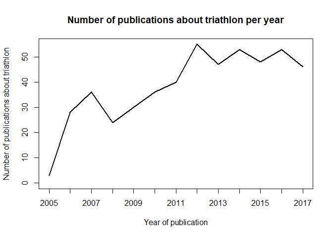
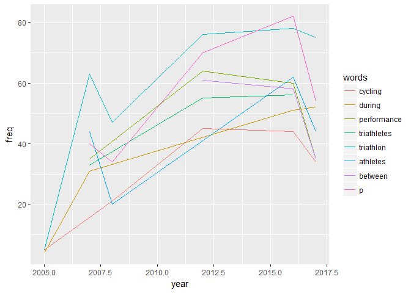
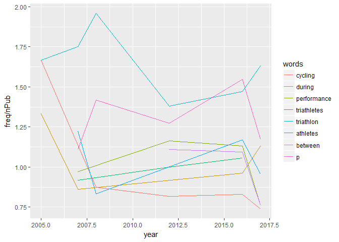
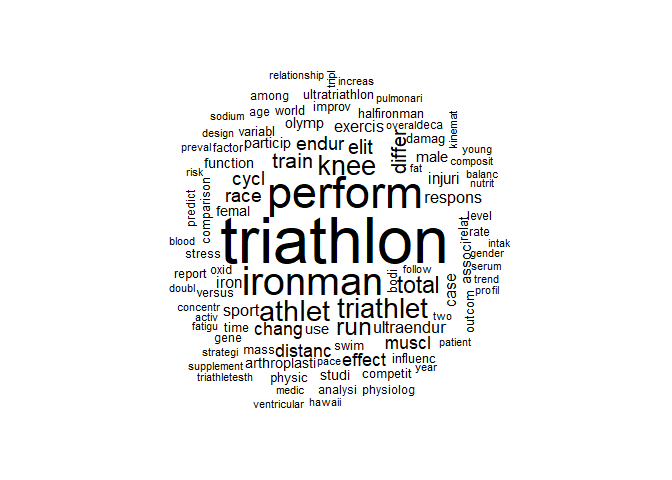
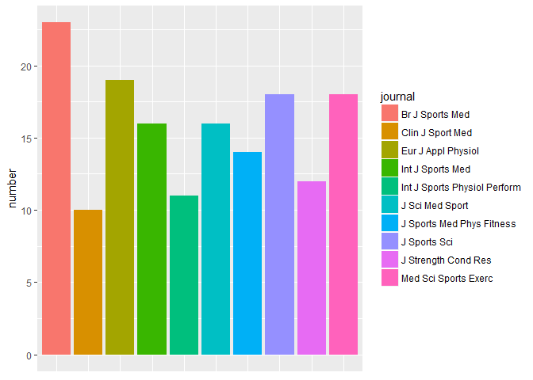

Today I am using the RISmed package for R to analyze publications about triathlon. It is an amazing package to look through the Pubmed database for what they have on a certain subject. Pubmed is a NIH (USA) funded database which hosts articles about medicine and biology. Today, I am looking at studies that have been done on injuries, disease and human physiology that have to do with triathlon. I am not a triathlete yet, I am just focusing on running this year but it is on my radar. I cycle to commute to the lab and swim as cross training every once in a while. I am planning on starting with a duathlon this summer and maybe casual triathlons next year. I use the Pubmed database every day for work, and I am very curious to know what has been done for triathletes specifically, so let’s jump right into it!
Number of publications containing the word “triathlon” from 2000-2017
There are 596 publications on the pubmed database total between the years 2000 and 2017 about triathlon. Let’s see if the number of publications was stable over the years, with some stats first and a plot of the number of publications according to the year:

The graph doesn’t go all the way back to 2000 because I reached the limit for number of publications I set. On the graph, we can see that 13 years ago there weren’t many publications about triathlon but their number increased tenfold after that despite a decrease in 2008 that might have been due to the financial crisis. In 2012 the number reached a pic and has been pretty stable since at around 50 publications a year. The number of triathletes around the world has been increasing over the years and it is good that the interest in the sport has carried on to research publications.
What are the studies about in triathlon?
Most used words in the abstracts
We are now going to look at the 10 most used words in abstracts over the years in the table below in different years:
The same words don’t always come up every year. Some words don’t give us much information like “triathlon” and “subsequent”.The words that interest me are related to biology and medicine, there is “artery” so there is an interest in vascular system of endurance athletes, “p” for p-value in statistics, “mass” so there were studies that probably look at mass body index or muscle/fat mass, and there is also “age”, so there must be studies that compare age of triathletes. The phase of a triathlon race that comes up most is cycling interestingly, so it might be what some scientists consider easier to study or a more important part in the race. A lot of the words do come up in the top ten a few times, and I am curious to see the evolution of the use of some words, so let’s pull it up right now:
 
I’ve drawn two plots here, one where there is simply the frequency of the use of the top 5 words in abstracts about triathlon of each year, and the other one is the frequency normalized to the number of publications. The two plots look drastically different.
-
The first plot shows mostly increase in the words generally, with a decrease in 2008 because of the decrease in publications, and then another decrease in 2016, probably meaning the top words have just shifted to new uses.
-
The second plot shows that there are some words that are present either in more than 1 publication or mentioned several times in the abstract, their normalized frequency is higher than 1 like “p” for p-value (statistics), “performance”. The word “cycling” saw a huge drop in use over the years. “Triathletes” was rising slowly. Towards more recent years, we notice the same thing as in the first plot: the top words seem to not be used as much, probably in favor of new words and the word “triathlon” is being used more times per abstract.
Most used words in the titles
The title gives a different perspective on the subject because it will be straight to the point of the article and will have less words that are not telling us really what the study is about.
Now this is interesting: the only body part in the top 20 words used in titles of articles mentionning triathlon is the knee. I am going to make the assumption that knee injuries have been studied most in triathlon based on this result. We also see ironman in there, but not sprint, olympic or half-ironman so this distance has probably been studied the most as well. Another interesting word is “iron”, which can either be used as “iron man” but it could be about red blood cells haeme in triathletes. To make sure we’d have to spend a little more time looking through it, make sure you let me know if you would like that using my social media. We also see endurance and ultraendurance words there. The word elite also comes up a lot, which makes sense if most studies look at results from elite athletes rather than casual triathletes and age groupers. There is also “muscle” in the top 20 which I find interesting as well because it is not the biggest part of the training.
WordCloud

So from this we get more words that pop up like sodium supplement, stress, arthroplasty, hawaii, oxid, which is starting to sound much more interesting! Now I wanted to look at the words most used in articles that talk about knees and triathlon so see what about the knees of triathletes interests researchers:
Top journals that publish on triathlon

The journal that publishes most on triathlon is the British Journal of Sports Medicine, which isn’t too surprising as the UK are probably the most competitive country in triathlon at the moment. The rest of the top ten journals to publish in triathlon are also all about sports medicine, except one which is applied physiology. The top ten doesn’t contain very high Impact factor journals, but this is not surprising either because these journals don’t typically go for this type of publication and don’t have a specific section dedicated to sports science.
Top authors diversity and specialty
We pulled up the top five most publishing authors for the publications about triathlon and their number of publications on the table above. There are 1625 different authors with 1382 authors having only one publication and 243 authors having at least 2. There are a few authors in the top 5 that have published a lot on triathlon-related studies, let’s take a closer look at the first two by doing a bit of research:
-
Dr. Beat Knechtle is a swiss MD and on Research gate has 429 Research items, 25273 Reads, 5029 Citations so he is very prolific in the domain and he is also a triathlete and ultrarunner himself. You can learn more about him by listening to the ultraScience podcast episode 50, which is hosted by Dr. Shawn Bearden and is amazing.
-
Dr. Thomas Rosemann is also an MD from Switzerland but his work is not entirely focused on endurance sports but he has contributed quite a bit to it. His research gate shows 591 Research items, 38211 Reads, 12816 Citations.
-
Dr. Rüst CA, after a little search on pubmed is found often on the same papers as one or both of the scientists above, he works at the same institute in Zurich as Dr. Thomas Rosemann and his researchGate shows 193 Research items, 10830 Reads and 2068 Citations.
-
Dr. Lepers R is an INSERM researcher and teaches in France at University Bourgogne Franche-Comté and has done a lot of work on exercize-related fatigue; his researchgate shows 247 Research items, 29350 Reads and 5181 Citations.
-
Dr. Patrizia Knechtle, I’m guessing related to or married to the first author on the list, I couldn’t find much info on her, she is on a lot of the same papers as him.
All of these top authors publishing on triathlon work in Europe, mostly Switzerland, so there must be a high interest in endurance sports there.
Conclusion
This little study on how triathlon is being studied by researchers specifically in the domain of biology and medicine using the Pubmed database showed that the focus is mostly on knee injuries. The journals that publish this kind of study are mostly sports medicine and sports science dedicated journals rather than more general physiology journals. The most prolific labs and researchers are in Europe, specifically Switzerland, and most publish closely together.
For those interested in the code I used it is down below. I hope this was entertaining and informative, see you next time!
Sciathlete
library(RISmed)
subject <- "triathlon"
res <- EUtilsSummary(subject, type="esearch", db="pubmed", datetype='pdat', mindate=2000, maxdate=2017, retmax=500)
fetch <- EUtilsGet(res)
y <- YearPubmed(fetch)
summary(y)
plot(table(y), type = "l", main="Number of publications about triathlon per year", xlab = "Year of publication", ylab="Number of publications about triathlon")
library(qdap)
library(knitr)
library(ggplot2)
myFunc<-function(year){
articles1<-data.frame('Abstract'=AbstractText(fetch), 'Year'=YearPubmed(fetch))
abstracts1<-articles1[which(articles1$Year==year),]
abstracts1<-data.frame(abstracts1)
abstractsOnly<-as.character(abstracts1$Abstract)
abstractsOnly<-paste(abstractsOnly, sep="", collapse="")
abstractsOnly<-as.vector(abstractsOnly)
abstractsOnly<-strip(abstractsOnly)
stsp<-rm_stopwords(abstractsOnly, stopwords = qdapDictionaries::Top100Words)
ord <- data.frame(table(stsp))
ord<-ord[order(ord$Freq, decreasing=TRUE),]
ord <- head(ord,10)
ord <- data.frame('year'= rep.int(year, 10), 'words'= ord$stsp, 'freq' = ord$Freq)
}
ofive <- myFunc(2005)
oseven <- myFunc(2007)
oeight <- myFunc(2008)
otwelve <- myFunc(2012)
osixteen<-myFunc(2016)
oseventeen<-myFunc(2017)
all<-rbind(ofive, oseven, oeight, otwelve, osixteen, oseventeen)
tble <- cbind(ofive, oseven, oeight, otwelve, osixteen, oseventeen)
kable(tble)
n_occur <- data.frame(table(all$words))
n_occur2 <- n_occur[n_occur$Freq > 2,]
set <- all[is.element(all$words, n_occur2$Var1),]
ggplot(set, aes(x=year, y=freq, colour=words)) + geom_line()
titles1<-data.frame('Title'=ArticleTitle(fetch), 'Year'=YearPubmed(fetch))
abstractsOnly<-as.character(titles1$Title)
abstractsOnly<-paste(abstractsOnly, sep="", collapse="")
abstractsOnly<-as.vector(abstractsOnly)
abstractsOnly<-strip(abstractsOnly)
stsp<-rm_stopwords(abstractsOnly, stopwords = qdapDictionaries::Top100Words)
ordtitles<-as.data.frame(table(stsp))
ordtitles<-ordtitles[order(ordtitles$Freq, decreasing=TRUE),]
kable(head(ordtitles,20))
library(tm)
library(SnowballC)
library(wordcloud)
library(qdap)
abstractWords <- abstractsOnly
abstractWordsCorpus <- Corpus(VectorSource(abstractWords))
abstractWordsCorpus <- tm_map(abstractWordsCorpus, PlainTextDocument)
abstractWordsCorpus <- tm_map(abstractWordsCorpus, removePunctuation)
abstractWordsCorpus <- tm_map(abstractWordsCorpus, removeWords, stopwords('english'))
abstractWordsCorpus <- tm_map(abstractWordsCorpus, stemDocument)
abstractWordsCorpus <- tm_map(abstractWordsCorpus, removeWords, c('the', 'this', stopwords('english')))
wordcloud(abstractWordsCorpus, max.words = 100, random.order = FALSE)
articles <- as.data.frame(titles1, stringsAsFactors=FALSE)
titleWords <- NULL
for(i in 1:nrow(articles)){
if(!is.na(titles1$Title[i])){
if(gregexpr('knee', as.character(titles1$Title[i]), ignore.case = TRUE)[[1]][1]!=-1){
titleWords <- c(titleWords, titles1$Title[i])
}
}
}
library(qdap)
kneeTitles <- data.frame('Titles'=articles$Title[titleWords])
abstractsOnly <- as.character(kneeTitles$Title)
abstractsOnly <- paste(abstractsOnly, sep="", collapse="")
abstractsOnly <- as.vector(abstractsOnly)
abstractsOnly <- strip(abstractsOnly)
stsp<-rm_stopwords(abstractsOnly, stopwords = qdapDictionaries::Top100Words)
ord<-as.data.frame(table(stsp))
ord<-ord[order(ord$Freq, decreasing=TRUE),]
kable(head(ord,40))
journal <- MedlineTA(fetch)
jnltble <- data.frame(table(journal))
journal_count <- data.frame('journal' = jnltble$journal, 'number' = jnltble$Freq)
journal_count_top10 <- journal_count[order(-journal_count[,2]),][1:10,]
ggplot(journal_count_top10, aes(x=journal, y=number, fill=journal)) + geom_bar(position="dodge",stat="identity")+
theme(axis.title.x=element_blank(),
axis.text.x=element_blank(),
axis.ticks.x=element_blank())
auths<-Author(fetch) # creates lists of authors
Last<-sapply(auths, function(x)paste(x$LastName, x$Initials, sep=" "))
auths2<-as.data.frame(sort(table(unlist(Last)), dec=TRUE))
names(auths2)<-c("name", "number of publications")
kable(head(auths2, 5))